Chapter 4 Behavioral Complexities
4.1 Introduction
We have reviewed so far how to fit naive models to estimate the expected value of the observed counts, \(\lambda\). So what is this \(\lambda\)? Here are some deifinitions for further discussion:
- relative abundance: \(\lambda\) without any reference to nuisance variables, but possibly standardized by design, or nuisance variables used as fixed effects,
- abundance: \(N=\lambda/C\), \(C\) is a correction factor and \(N\) refers to the number of individuals within the area surveyed – the problem is that we cannot measure this directly (this is a latent variable), moreover the survey area is also often unknown (i.e. for unlimited distance counts),
- occupancy: the probability that the survey area is occupied, this is really equivalent to the indicator function \(N>0\),
- density \(D = N/A = \lambda/AC\), abundance per unit area – same problems as above: both \(N\) and \(A\) are unknowns.
Our objective in the following chapters is to work out the details of estimating abundance and density in some clever ways through learning about the nature of the mechanisms contributing to \(C\).
4.2 Prerequisites
library(bSims) # simulations
library(detect) # multinomial models
source("functions.R") # some useful stuff
load("_data/josm/josm.rda") # JOSM data4.3 Birds in the forest
Build a landscape: extent is given in 100 m units
(l <- bsims_init(extent=10))## bSims landscape
## 1 km x 1 km
## stratification: Hplot(l)
We have a 100 ha landscape that we populate with birds, 1 bird / ha using a Poisson spatial point process. As a result, we have \(N\) birds in the landscape, \(N \sim Poisson(\lambda)\), \(\lambda = DA\):
set.seed(1)
(a <- bsims_populate(l, density=0.5))## bSims population
## 1 km x 1 km
## stratification: H
## total abundance: 52plot(a)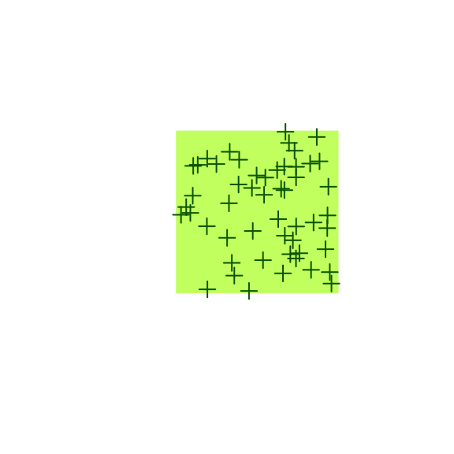
The locations can be seen as nest locations (a$nests stores the locations).
But birds don’t just stay put in one place. They move and vocalize:
(b <- bsims_animate(a,
vocal_rate=0.5, duration=10,
move_rate=1, movement=0.25))## bSims events
## 1 km x 1 km
## stratification: H
## total abundance: 52
## total duration: 10plot(b)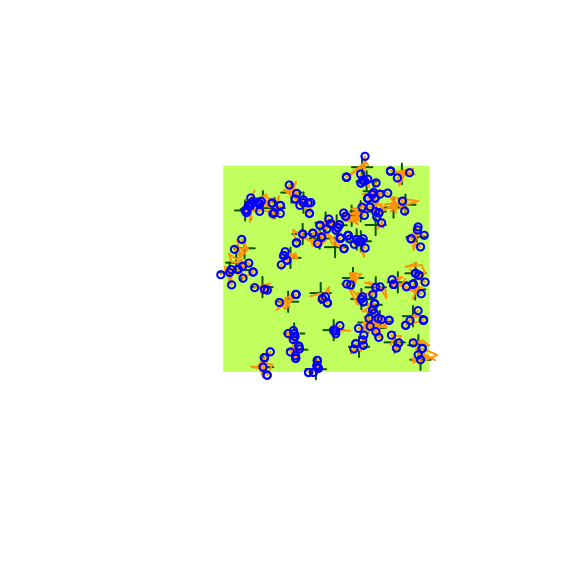
The get_events function, as the name implies, extracts the events:
movements ($v is 0) and vocalizations ($v is 1) alike,
unless filtered for vocalization events only.
Besides the coordinates, we also have the time of event ($t) and
the individual identifier ($i linking to the rows of the b$nests table):
e <- get_events(b, vocal_only=FALSE)
head(e)
v <- get_events(b, vocal_only=TRUE)
head(v)4.4 Survival model
Survival models assess time-to-event data which is often censored (some event has not occurred at the time the data collection ended).
Event time (\(T\)) is a continuous random variable. In the simplest case, its probability density function is the Exponential distribution: \(f(t)=\phi e^{-t\phi}\). The corresponding cumulative distribution function is: \(F(t)=\int_{0}^{t} f(t)dt=1-e^{-t\phi}\), giving the probability that the event has occurred by duration \(t\) and we will refer to this probability as \(p_t\). The parameter \(\phi\) is the rate of the Exponential distribution with mean \(1/\phi\) and variance \(1/\phi^2\).
In survival model, the complement of \(F(t)\) is called the survival function (\(S(t)=1-F(t)\), \(S(0)=1\)), which gives the probability that the event has not occurred by duration \(t\). The the hazard function (\(\lambda(t)=f(t)/S(t)\)) which defines the instantaneous rate of occurrence of the event (the density of events at \(t\) divided by the probability of surviving). The cumulative hazard (cumulative risk) the sum of the risks between doration 0 and \(t\) (\(\Lambda(t)=\int_{0}^{t} \lambda(t)dt\)).
The simplest survival distribution assumes constant risk over time (\(\lambda(t)=\phi\)), which corresponds to the Exponential distribution. The Exponential distribution also happens to describe the lengths of the inter-event times in a homogeneous Poisson process (events are independent, ‘memory-less’ process).
4.5 Vocalization events
Event times in our bSims example follow a Poisson process with rate \(\phi\) (vocal_rate)
within duration \(t=10\) minutes.
Let’s subset the vocalization events to include the time of first detections
for each individual (v1). The estimated rate should match our setting,
the plot shows the Exponential probability density function on top of
the event times:
v1 <- v[!duplicated(v$i),]
tmp <- v1
tmp$o <- seq_len(nrow(v1))
plot(o ~ t, tmp, type="n", ylab="Individuals",
main="Vocalization events",
ylim=c(1, nrow(b$nests)), xlim=c(0,10))
for (i in tmp$o) {
tmp2 <- v[v$i == v1$i[i],]
lines(c(tmp2$t[1], 10), c(i,i), col="grey")
points(tmp2$t, rep(i, nrow(tmp2)), cex=0.5)
points(tmp2$t[1], i, pch=19, cex=0.5)
}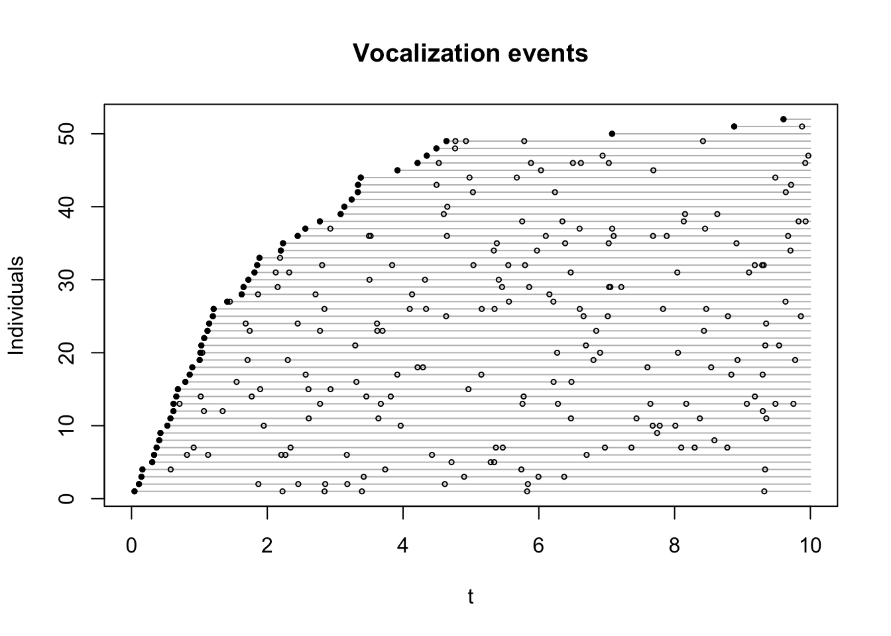
(phi <- b$vocal_rate[1])## [1] 0.5(phi_hat <- fitdistr(v1$t, "exponential")$estimate)## rate
## 0.4808hist(v1$t, xlab="Time of first detection (min)", freq=FALSE, main="",
col="lightgrey", ylab="f(t)")
curve(dexp(x, phi), add=TRUE, col=2)
curve(dexp(x, phi_hat), add=TRUE, col=4)
legend("topright", bty="n", lty=1, col=c(2,4),
legend=c("Expected", "Estimated"))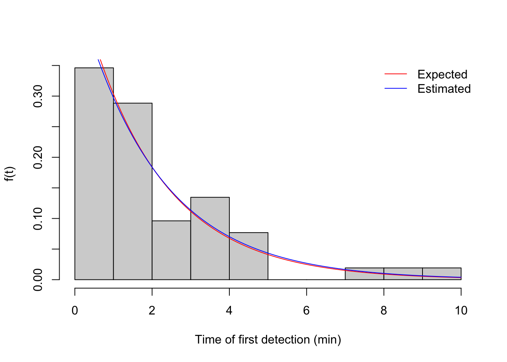
Now let’s visualize the corresponding cumulative distribution function.
We also bin the events into time intervals defined by interval end times
in the vector br (breaks to be used with cut):
br <- c(3, 5, 10)
i <- cut(v1$t, c(0, br), include.lowest = TRUE)
table(i)## i
## [0,3] (3,5] (5,10]
## 38 11 3plot(stepfun(v1$t, (0:nrow(v1))/nrow(v1)), do.points=FALSE, xlim=c(0,10),
xlab="Time of first detection (min)", ylab="F(t)", main="")
curve(1-exp(-phi*x), add=TRUE, col=2)
curve(1-exp(-phi_hat*x), add=TRUE, col=4)
legend("bottomright", bty="n", lty=c(1,1,1,NA),
col=c(1,2,4,3), pch=c(NA,NA,NA,21),
legend=c("Empirical", "Expected", "Estimated", "Binned"))
points(br, cumsum(table(i))/sum(table(i)), cex=2, col=3, pch=21)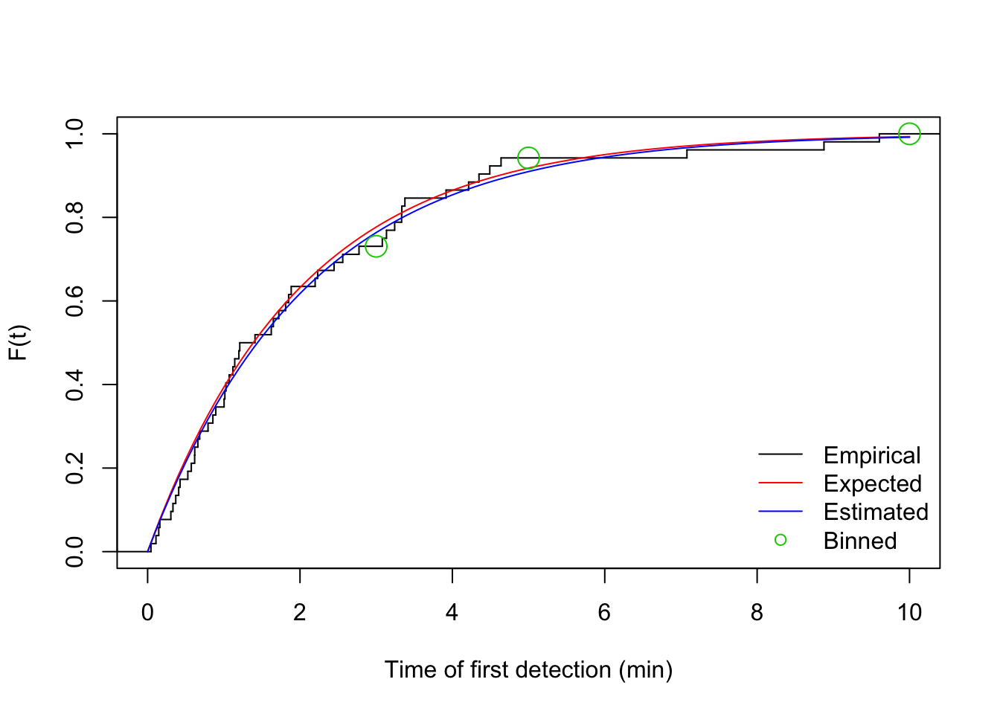
4.6 Removal model
The time-removal model, originally developed for estimating wildlife and fish abundances from mark-recapture studies, was later reformulated for avian surveys with the goal of improving estimates of bird abundance by accounting for the availability bias inherent in point-count data. The removal model applied to point-count surveys estimates the probability that a bird is available for detection as a function of the average number of detectable cues that an individual bird gives per minute (singing rate, \(\phi\)), and the known count duration (\(t\)).
Time-removal models are based on a removal experiment whereby animals are trapped and thereby removed from the closed population of animals being sampled. When applying a removal model to avian point-count surveys, the counts of singing birds (\(Y_{ij}, \ldots, Y_{iJ}\)) within a given point-count survey \(i\) (\(i = 1,\ldots, n\)) are tallied relative to when each bird is first detected in multiple and consecutive time intervals, with the survey start time \(t_{i0} = 0\), the end times of the time intervals \(t_{ij}\) (\(j = 1, 2,\ldots, J\)), and the total count duration of the survey \[t_{iJ}\]. We count each individual bird once, so individuals are ‘mentally removed’ from a closed population of undetected birds by the surveyor.
The continuous-time formulation of the removal model is identical to the Exponential survival model formulation with respect to the cumulative density function, which defines probability of availability for sampling given the occurrence of the species. The response variable in the removal model follows multinomial distribution with cell probabilities derived from the cumulative probability function.
We will use the detect::cmulti function to fit multinomial models using
conditional maximum likelihood procedure (the conditioning means that we only use
observations where the total count is not 0, i.e. the species was present).
The Y matrix lists the number of new individuals counted in each time interval,
the D matrix gives the interval end times.
(We use the detect::cmulti.fit function to be able to fit the model to a single survey.)
(y <- matrix(as.numeric(table(i)), nrow=1))## [,1] [,2] [,3]
## [1,] 38 11 3(d <- matrix(br, nrow=1))## [,1] [,2] [,3]
## [1,] 3 5 10(phi_hat1 <- exp(cmulti.fit(y, d, type="rem")$coef))## [1] 0.4683phi # setting## [1] 0.5phi_hat # from time-to-event data## rate
## 0.48084.6.1 Real data
Let’s pick a species from the JOSM data set.
For predictors, we will use a variable capturing date (DAY; standardized ordinal day of the year)
and an other one capturing time of day (TSSR; time since local sunrise).
The data frame X contains the predictors.
The matrix Y contains the counts of newly counted individuals binned into consecutive time intervals:
cell values are the \(Y_{ij}\)’s. The D object is another matrix mirroring the structure of Y
but instead of counts, it contains the interval end times: cell values are
the \(t_{ij}\)’s.
yall <- Xtab(~ SiteID + Dur + SpeciesID,
josm$counts[josm$counts$DetectType1 != "V",])
spp <- "TEWA"
Y <- as.matrix(yall[[spp]])
D <- matrix(c(3, 5, 10), nrow(Y), 3, byrow=TRUE,
dimnames=dimnames(Y))
X <- josm$surveys[rownames(Y), c("DAY", "TSSR")]
head(Y[rowSums(Y) > 0,])## 0-3min 3-5min 5-10min
## CL10106 4 0 0
## CL10112 2 0 0
## CL10120 1 1 0
## CL10170 1 0 0
## CL10172 0 0 2
## CL10181 0 0 1head(D)## 0-3min 3-5min 5-10min
## CL10102 3 5 10
## CL10106 3 5 10
## CL10108 3 5 10
## CL10109 3 5 10
## CL10111 3 5 10
## CL10112 3 5 10summary(X)## DAY TSSR
## Min. :0.392 Min. :-0.0285
## 1st Qu.:0.422 1st Qu.: 0.0506
## Median :0.452 Median : 0.1041
## Mean :0.450 Mean : 0.1040
## 3rd Qu.:0.474 3rd Qu.: 0.1568
## Max. :0.504 Max. : 0.23574.6.2 Time-invariant conventional model
Time-invariant means that the rate is constant over time (i.e. no difference between morning and midnight), while conventional refers to the assumption that all individuals share the same rate (their behaviour is identical in this regard).
In the time-invariant conventional removal model (Me0),
the individuals of a species at a given location and time are assumed to be homogeneous
in their singing rates.
The time to first detection follows the Exponential distribution,
and the cumulative density function of times to first detection in time interval
(0, \(t_{iJ}\)) gives us the probability that a bird sings at least once during the point count as
\(p(t_{iJ}) = 1 - exp(-t_{iJ} \phi)\).
We fit this model by specifying intercep-only in the
right hand side of the formula, and type="rem"
as part of the cmulti call:
Me0 <- cmulti(Y | D ~ 1, type="rem")
summary(Me0)##
## Call:
## cmulti(formula = Y | D ~ 1, type = "rem")
##
## Removal Sampling (homogeneous singing rate)
## Conditional Maximum Likelihood estimates
##
## Coefficients:
## Estimate Std. Error z value Pr(>|z|)
## log.phi_(Intercept) -0.8547 0.0174 -49.1 <2e-16 ***
## ---
## Signif. codes: 0 '***' 0.001 '**' 0.01 '*' 0.05 '.' 0.1 ' ' 1
##
## Log-likelihood: -3.2e+03
## BIC = 6.42e+03(phi_Me0 <- exp(coef(Me0)))## log.phi_(Intercept)
## 0.4254curve(1-exp(-x*phi_Me0), xlim=c(0, 10), ylim=c(0, 1), col=4,
xlab="Duration (min)", ylab=expression(p(t[J])),
main=paste(spp, "Me0"))
points(D[1,], cumsum(colSums(Y))/sum(Y), cex=2, col=3, pch=21)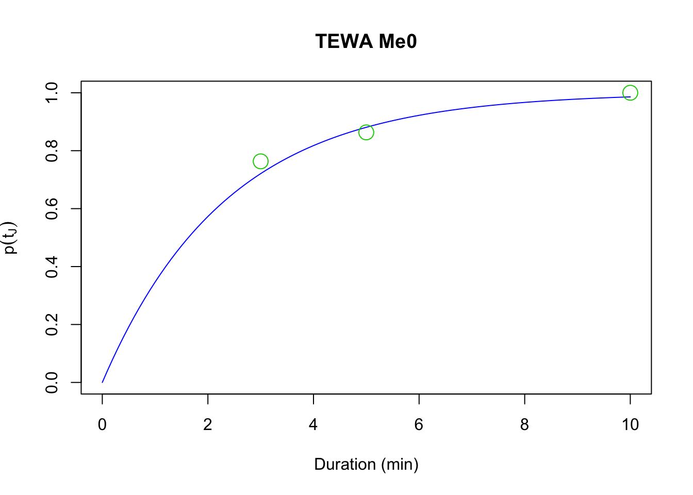
4.6.3 Time-varying conventional removal model
Singing rates of birds vary with time of day, time of year, breeding status, and stage of the nesting cycle. Thus, removal model estimates of availability may be improved by accounting for variation in singing rates using covariates for day of year and time of day. In this case \(p(t_{iJ}) = 1 - e^{-t_{iJ} \phi_{i}}\) and \(log(\phi_{i}) = \beta_{0} + \sum^{K}_{k=1} \beta_{k} x_{ik}\) is the linear predictor with \(K\) covariates and the corresponding unknown coefficients (\(\beta_{k}\), \(k = 0,\ldots, K\)).
Let’s fit a couple of time-varying models using DAY and TSSR as covariates:
Me1 <- cmulti(Y | D ~ DAY, X, type="rem")
Me2 <- cmulti(Y | D ~ TSSR, X, type="rem")Now compare the three conventional models based on AIC and inspect the summary for the best supported model with the JDAY effect.
Me_AIC <- AIC(Me0, Me1, Me2)
Me_AIC$delta_AIC <- Me_AIC$AIC - min(Me_AIC$AIC)
Me_AIC[order(Me_AIC$AIC),]
Me_Best <- get(rownames(Me_AIC)[Me_AIC$delta_AIC == 0])
summary(Me_Best)##
## Call:
## cmulti(formula = Y | D ~ DAY, data = X, type = "rem")
##
## Removal Sampling (homogeneous singing rate)
## Conditional Maximum Likelihood estimates
##
## Coefficients:
## Estimate Std. Error z value Pr(>|z|)
## log.phi_(Intercept) 0.0784 0.2615 0.30 0.76427
## log.phi_DAY -2.0910 0.5866 -3.56 0.00036 ***
## ---
## Signif. codes: 0 '***' 0.001 '**' 0.01 '*' 0.05 '.' 0.1 ' ' 1
##
## Log-likelihood: -3.2e+03
## BIC = 6.41e+03To visually capture the time-varying effects, we make some plots using base graphics, colors matching the time-varying predictor. This way we can not only assess how availability probability (given a fixed time interval) is changing with the values of the predictor, but also how the cumulative distribution changes with time.
b <- coef(Me_Best)
n <- 100
DAY <- seq(min(X$DAY), max(X$DAY), length.out=n+1)
TSSR <- seq(min(X$TSSR), max(X$TSSR), length.out=n+1)
Duration <- seq(0, 10, length.out=n)
col <- colorRampPalette(c("red", "yellow", "blue"))(n)
op <- par(mfrow=c(1,2))
p1 <- 1-exp(-3*exp(b[1]+b[2]*DAY))
plot(DAY, p1, ylim=c(0,1), type="n",
main=paste(spp, rownames(Me_AIC)[Me_AIC$delta_AIC == 0]),
ylab="P(availability)")
for (i in seq_len(n)) {
lines(DAY[c(i,i+1)], p1[c(i,i+1)], col=col[i], lwd=2)
}
abline(h=range(p1), col="grey")
plot(Duration, Duration, type="n", ylim=c(0,1),
ylab="P(availability)")
for (i in seq_len(n)) {
p2 <- 1-exp(-Duration*exp(b[1]+b[2]*DAY[i]))
lines(Duration, p2, col=col[i])
}
abline(v=3, h=range(p1), col="grey")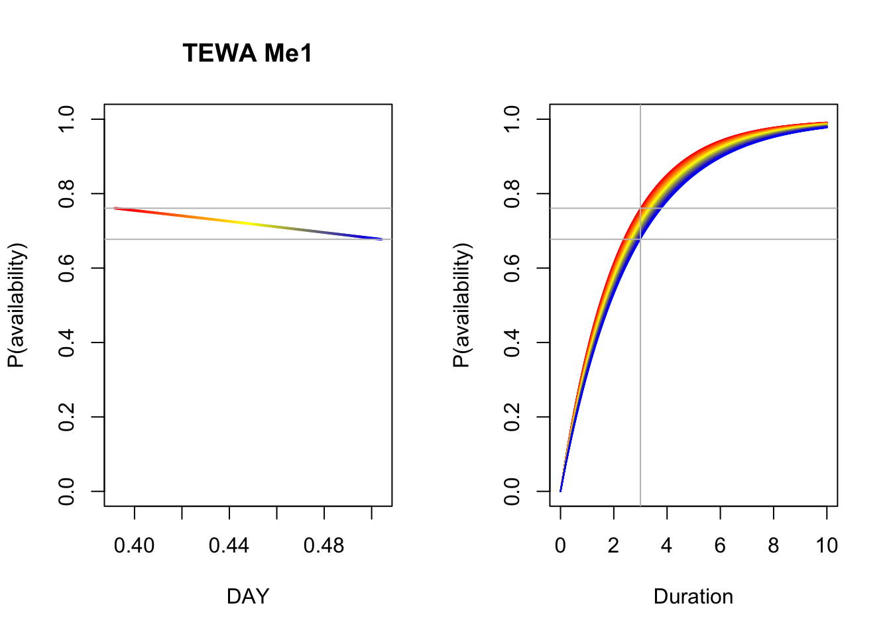
par(op)4.7 Finite mixtures
Let’s relax the assumption that all individuals vocalize at the same rate.
We can think about this as different groups in the population.
The individuals within the groups have homogenerous rates,
but the group level rates are different.
We can introduce such heterogeneity into our bSims world by
specifying the group level rates (phi vector) and the
proportion of individuals belonging to the groups (mix).
phi <- c(10, 0.5)
mix <- c(0.25, 0.75)
set.seed(1)
(a2 <- bsims_populate(l, density=1)) # increase density## bSims population
## 1 km x 1 km
## stratification: H
## total abundance: 104(b2 <- bsims_animate(a2, vocal_rate=phi, mixture=mix))## bSims events
## 1 km x 1 km
## stratification: H
## total abundance: 104
## mixture with total duration: 10b2$vocal_rate## G1 G2
## H 10 0.5
## E 10 0.5
## R 10 0.5If we plot the time to first detection data, we can see how expected distribution (red) is different from the fitted Exponential distribution assuming homogeneity:
v <- get_events(b2, vocal_only=TRUE)
v1 <- v[!duplicated(v$i),]
(phi_hat <- fitdistr(v1$t, "exponential")$estimate)## rate
## 0.6522hist(v1$t, xlab="Time of first detection (min)", freq=FALSE, main="",
col="lightgrey", ylab="f(t)")
curve(mix[1]*dexp(x, phi[1])+mix[2]*dexp(x, phi[2]), add=TRUE, col=2)
curve(dexp(x, phi_hat), add=TRUE, col=4)
legend("topright", bty="n", lty=1, col=c(2,4),
legend=c("Expected (mixture)", "Estimated (exponential)"))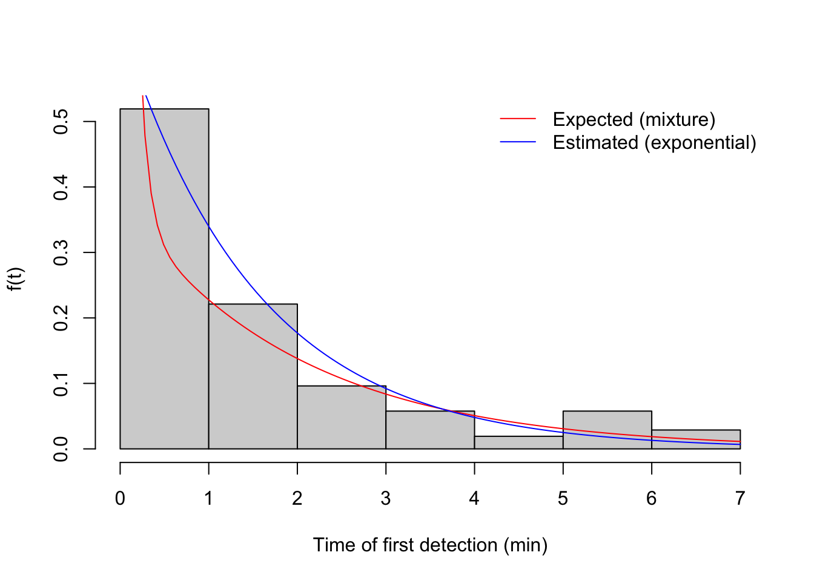
Now let’s visualize the corresponding cumulative distribution function:
br <- 1:10
i <- cut(v1$t, c(0, br), include.lowest = TRUE)
table(i)## i
## [0,1] (1,2] (2,3] (3,4] (4,5] (5,6] (6,7] (7,8] (8,9] (9,10]
## 54 23 10 6 2 6 3 0 0 0plot(stepfun(v1$t, (0:nrow(v1))/nrow(v1)), do.points=FALSE, xlim=c(0,10),
xlab="Time of first detection (min)", ylab="F(t)", main="")
curve(1-mix[2]*exp(-phi[2]*x), add=TRUE, col=2)
curve(1-exp(-phi_hat*x), add=TRUE, col=4)
legend("bottomright", bty="n", lty=c(1,1,1,NA),
col=c(1,2,4,3), pch=c(NA,NA,NA,21),
legend=c("Empirical", "Expected (mixture)", "Estimated (exponential)", "Binned"))
points(br, cumsum(table(i))/sum(table(i)), cex=2, col=3, pch=21)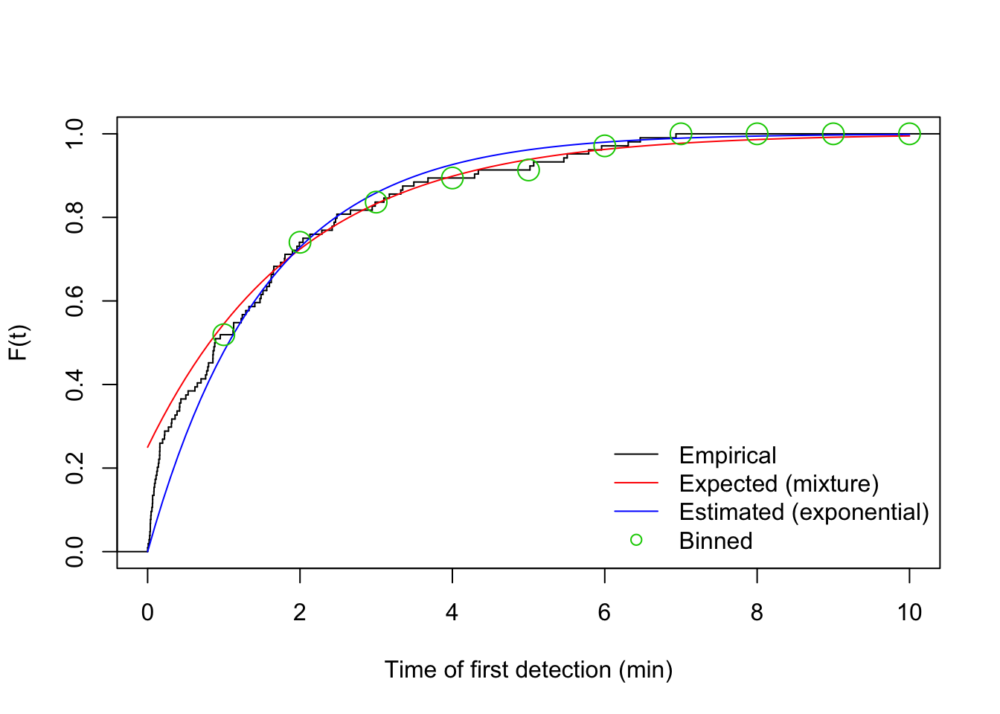
We use the detect::cmulti function to fit the finite mixture model:
(y <- matrix(as.numeric(table(i)), nrow=1))## [,1] [,2] [,3] [,4] [,5] [,6] [,7] [,8] [,9] [,10]
## [1,] 54 23 10 6 2 6 3 0 0 0(d <- matrix(br, nrow=1))## [,1] [,2] [,3] [,4] [,5] [,6] [,7] [,8] [,9] [,10]
## [1,] 1 2 3 4 5 6 7 8 9 10cf <- cmulti.fit(y, d, type="fmix")$coef # log.phi, logit.c
c(phi=phi[2], c=mix[2]) # setting## phi c
## 0.50 0.75c(phi_hat=exp(cf[1]), c_hat=plogis(cf[2])) # estimate## phi_hat c_hat
## 0.5350 0.82444.7.1 Time-invariant finite mixture removal model
The removal model can accommodate behavioral heterogeneity in singing by subdividing the sampled population for a species at a given point into a finite mixture of birds with low and high singing rates, which requires the additional estimation of the proportion of birds in the sampled population with low singing rates.
In the continuous-time formulation of the finite mixture (or two-point mixture) removal model,
the cumulative density function during a point count is given by
\(p(t_{iJ}) = (1 - c) 1 + c (1 - e^{-t_{iJ} \phi}) = 1 - c e^{-t_{iJ} \phi}\), where
\(\phi\) is the singing rate for the group of infrequently singing birds, and \(c\) is the
proportion of birds during the point count that are infrequent singers. The remaining
proportions (\(1 - c\); the intercept of the cumulative density function) of the frequent
singers are assumed to be detected instantaneously at the start of the first time interval.
In the simplest form of the finite mixture model, the proportion and singing rate of birds
that sing infrequently is homogeneous across all times and locations (model Mf0).
We are using the type = "fmix" for finite mixture removal models.
Here, for the read bird data set:
Mf0 <- cmulti(Y | D ~ 1, type="fmix")
summary(Mf0)##
## Call:
## cmulti(formula = Y | D ~ 1, type = "fmix")
##
## Removal Sampling (heterogeneous singing rate)
## Conditional Maximum Likelihood estimates
##
## Coefficients:
## Estimate Std. Error z value Pr(>|z|)
## log.phi_(Intercept) -1.7146 0.0970 -17.68 <2e-16 ***
## logit.c 0.0742 0.0598 1.24 0.21
## ---
## Signif. codes: 0 '***' 0.001 '**' 0.01 '*' 0.05 '.' 0.1 ' ' 1
##
## Log-likelihood: -3.1e+03
## BIC = 6.22e+03cf_Mf0 <- coef(Mf0)
curve(1-plogis(cf_Mf0[2]) * exp(-x*exp(cf_Mf0[1])),
xlim=c(0, 10), ylim=c(0, 1), col=4, main=paste(spp, "Mf0"),
xlab="Duration (min)", ylab=expression(p(t[J])))
points(D[1,], cumsum(colSums(Y))/sum(Y), cex=2, col=3, pch=21)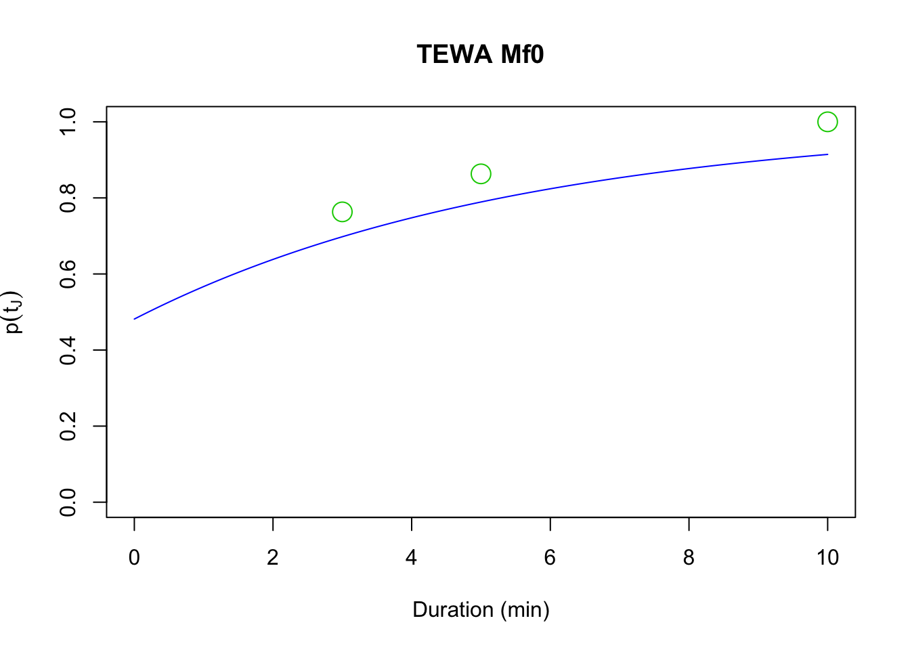
4.7.2 Time-varying finite mixture removal models
Previously, researchers have applied covariate effects on the parameter \(\phi_{i}\) of the finite mixture model, similarly to how we modeled these effects in conventional models. This model assumes that the parameter \(c\) is constant irrespective of time and location (i.e. only the infrequent singer group changes its singing behavior).
We can fit finite mixture models with DAY and TSSR as covariates on \(\phi\).
In this case \(p(t_{iJ}) = 1 - c e^{-t_{iJ} \phi_{i}}\) and
\(log(\phi_{i}) = \beta_{0} + \sum^{K}_{k=1} \beta_{k} x_{ik}\)
is the linear predictor with \(K\) covariates and the corresponding unknown coefficients
(\(\beta_{k}\), \(k = 0,\ldots, K\)).
Mf1 <- cmulti(Y | D ~ DAY, X, type="fmix")
Mf2 <- cmulti(Y | D ~ TSSR, X, type="fmix")Compare the three finite mixture models based on AIC and inspect the summary for the best supported model:
Mf_AIC <- AIC(Mf0, Mf1, Mf2)
Mf_AIC$delta_AIC <- Mf_AIC$AIC - min(Mf_AIC$AIC)
Mf_Best <- get(rownames(Mf_AIC)[Mf_AIC$delta_AIC == 0])
Mf_AIC[order(Mf_AIC$AIC),]
summary(Mf_Best)##
## Call:
## cmulti(formula = Y | D ~ DAY, data = X, type = "fmix")
##
## Removal Sampling (heterogeneous singing rate)
## Conditional Maximum Likelihood estimates
##
## Coefficients:
## Estimate Std. Error z value Pr(>|z|)
## log.phi_(Intercept) 0.754 0.848 0.89 0.3739
## log.phi_DAY -5.412 1.938 -2.79 0.0052 **
## logit.c 0.119 0.062 1.92 0.0548 .
## ---
## Signif. codes: 0 '***' 0.001 '**' 0.01 '*' 0.05 '.' 0.1 ' ' 1
##
## Log-likelihood: -3.1e+03
## BIC = 6.22e+03We produce a similar plot as before.
b <- coef(Mf_Best)
op <- par(mfrow=c(1,2))
p1 <- 1-plogis(b[3])*exp(-3*exp(b[1]+b[2]*DAY))
plot(DAY, p1, ylim=c(0,1), type="n",
main=paste(spp, rownames(Mf_AIC)[Mf_AIC$delta_AIC == 0]),
ylab="P(availability)")
for (i in seq_len(n)) {
lines(DAY[c(i,i+1)], p1[c(i,i+1)], col=col[i], lwd=2)
}
abline(h=range(p1), col="grey")
plot(Duration, Duration, type="n", ylim=c(0,1),
ylab="P(availability)")
for (i in seq_len(n)) {
p2 <- 1-plogis(b[3])*exp(-Duration*exp(b[1]+b[2]*DAY[i]))
lines(Duration, p2, col=col[i])
}
abline(v=3, h=range(p1), col="grey")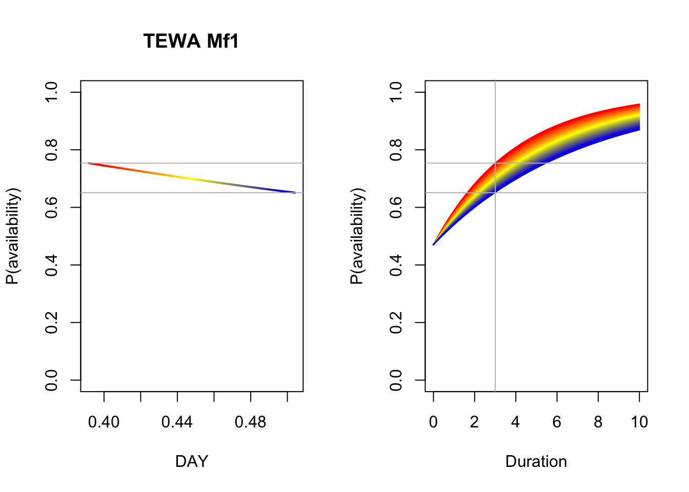
par(op)An alternative parametrization is that \(c_{i}\) rather than \(\phi\) be the time-varying parameter,
allowing the individuals to switch between the frequent and infrequent group depending on covariates.
We can fit this class of finite mixture model with DAY and TSSR as covariates on \(c\)
using type = "mix" (instead of "fmix").
In this case \(p(t_{iJ}) = 1 - c_{i} e^{-t_{iJ} \phi}\) and
\(logit(c_{i}) = \beta_{0} + \sum^{K}_{k=1} \beta_{k} x_{ik}\) is the linear predictor with \(K\)
covariates and the corresponding unknown coefficients (\(\beta_{k}\), \(k = 0,\ldots, K\)).
Because \(c_{i}\) is a proportion, we model it on the logit scale.
Mm1 <- cmulti(Y | D ~ DAY, X, type="mix")
Mm2 <- cmulti(Y | D ~ TSSR, X, type="mix")We did not fit a null model for this parametrization, because it is identical to the Mf0 model,
so that model Mf0 is what we use to compare AIC values and inspect the summary for the best
supported model:
Mm_AIC <- AIC(Mf0, Mm1, Mm2)
Mm_AIC$delta_AIC <- Mm_AIC$AIC - min(Mm_AIC$AIC)
Mm_Best <- get(rownames(Mm_AIC)[Mm_AIC$delta_AIC == 0])
Mm_AIC[order(Mm_AIC$AIC),]
summary(Mm_Best)##
## Call:
## cmulti(formula = Y | D ~ DAY, data = X, type = "mix")
##
## Removal Sampling (heterogeneous singing rate)
## Conditional Maximum Likelihood estimates
##
## Coefficients:
## Estimate Std. Error z value Pr(>|z|)
## log.phi -1.716 0.097 -17.69 <2e-16 ***
## logit.c_(Intercept) -2.070 0.692 -2.99 0.0028 **
## logit.c_DAY 4.804 1.558 3.08 0.0020 **
## ---
## Signif. codes: 0 '***' 0.001 '**' 0.01 '*' 0.05 '.' 0.1 ' ' 1
##
## Log-likelihood: -3.1e+03
## BIC = 6.22e+03We produce a similar plot as before:
b <- coef(Mm_Best)
op <- par(mfrow=c(1,2))
p1 <- 1-plogis(b[2]+b[3]*DAY)*exp(-3*exp(b[1]))
plot(DAY, p1, ylim=c(0,1), type="n",
main=paste(spp, rownames(Mm_AIC)[Mm_AIC$delta_AIC == 0]),
ylab="P(availability)")
for (i in seq_len(n)) {
lines(DAY[c(i,i+1)], p1[c(i,i+1)], col=col[i], lwd=2)
}
abline(h=range(p1), col="grey")
plot(Duration, Duration, type="n", ylim=c(0,1),
ylab="P(availability)")
for (i in seq_len(n)) {
p2 <- 1-plogis(b[2]+b[3]*DAY[i])*exp(-Duration*exp(b[1]))
lines(Duration, p2, col=col[i])
}
abline(v=3, h=range(p1), col="grey")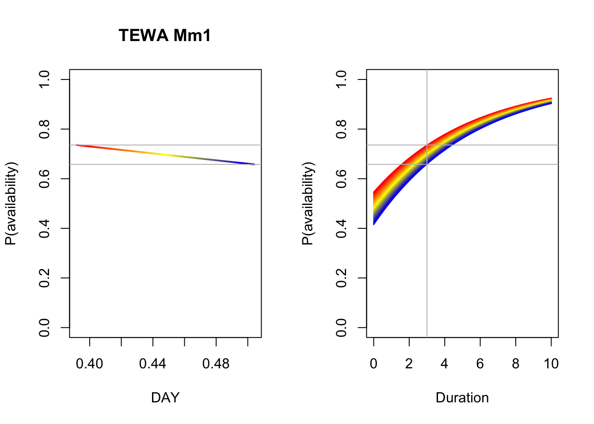
par(op)4.8 Let the best model win
So which of the 3 parametrizations proved to be best for our data? It was the finite mixture with time-varying proportion of infrequent singers. Second was the other finite mixture model, while the conventional model was lagging behind.
M_AIC <- AIC(Me_Best, Mf_Best, Mm_Best)
M_AIC$delta_AIC <- M_AIC$AIC - min(M_AIC$AIC)
M_AIC[order(M_AIC$AIC),]Finite mixture models provide some really nice insight into how singing behavior changes over time and, due to more parameters, they provide a better fit and thus minimize bias in population size estimates. But all this improvement comes with a price: sample size requirements (or more precisely, the number of detections required) are really high. To have all the benefits with reduced variance, one needs about 1000 non-zero observations to fit finite mixture models, 20 times more than needed to reliably fit conventional removal models. This is much higher than previously suggested minimum sample sizes.
Our findings also indicate that lengthening the count duration from 3 minutes to 5–10 minutes is an important consideration when designing field surveys to increase the accuracy and precision of population estimates. Well-informed survey design combined with various forms of removal sampling are useful in accounting for availability bias in point counts, thereby improving population estimates, and allowing for better integration of disparate studies at larger spatial scales.
4.9 Exercises
- Compare different duration and intervals
- Pick other species with lower singing rates (10 min p < 1)
4.10 Estimating abundance
Exponential model, bSims data
set.seed(1)
phi <- 0.5
Den <- 1
l <- bsims_init()
a <- bsims_populate(l, density=Den)
b <- bsims_animate(a, vocal_rate=phi, move_rate=0)
tint <- 1:5
(tr <- bsims_transcribe(b, tint=tint))## bSims transcript
## 1 km x 1 km
## stratification: H
## total abundance: 104
## total duration: 10
## detected: 104 heard
## 1st inds. [0-1, 1-2, 2-3, 3-4, 4-5 min] [0+ m]tr$removal # binned new individuals## 0-1min 1-2min 2-3min 3-4min 4-5min
## 0+m 35 28 16 12 6(Y <- sum(tr$removal)) # detected in 0-3 min## [1] 97fit <- cmulti.fit(tr$removal, matrix(tint, nrow=1), type="rem")
exp(fit$coef)## [1] 0.4083(p <- 1-exp(-max(tint)*exp(fit$coef)))## [1] 0.8702# Y=NC, N=Y/C=Y/p3
(N <- sum(a$abundance))## [1] 104(Nhat <- Y/p)## [1] 111.5# density is N / A
sum(a$abundance) / sum(a$area)## [1] 1.04Nhat / sum(a$area)## [1] 1.115# area is known, q=1Multiple-visit stuff for bSims: the counting of new individuals resets for each interval (also: needs equal intervals)
tr$visits## 0-1min 1-2min 2-3min 3-4min 4-5min
## 0+m 35 48 44 43 45v <- get_events(b, vocal_only=TRUE)
v <- v[v$t <= max(tint),]
v1 <- v[!duplicated(v$i),]
tmp <- v1
tmp$o <- seq_len(nrow(v1))
plot(o ~ t, tmp, type="n", ylab="Individuals",
main="Vocalization events",
ylim=c(1, nrow(b$nests)), xlim=c(0,max(tint)))
for (i in tmp$o) {
tmp2 <- v[v$i == v1$i[i],]
lines(c(tmp2$t[1], max(tint)), c(i,i), col="grey")
points(tmp2$t, rep(i, nrow(tmp2)), cex=0.5)
points(tmp2$t[1], i, pch=19, cex=0.5)
}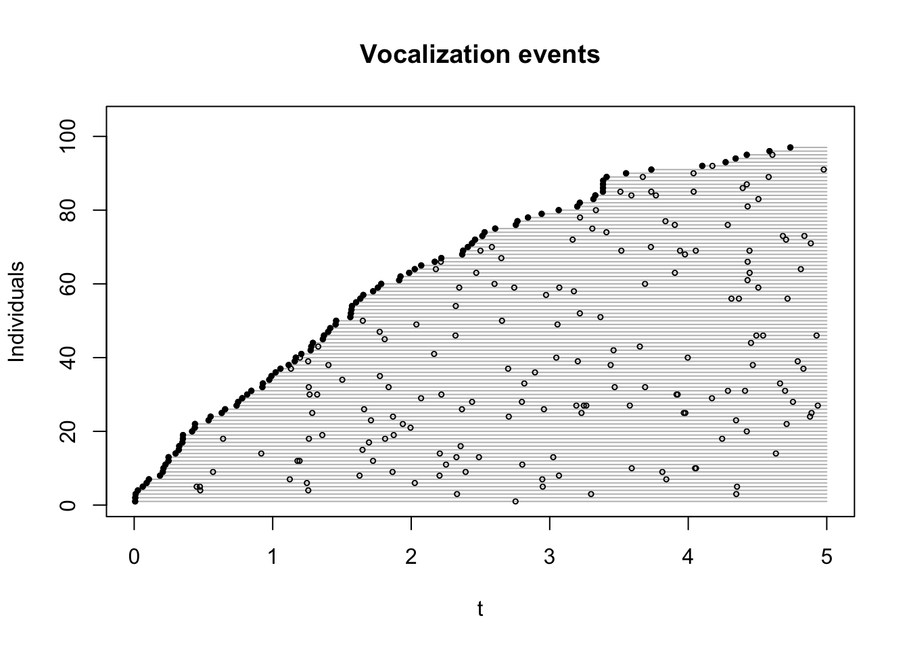
plot(o ~ t, tmp, type="n", ylab="Individuals",
main="Vocalization events",
ylim=c(1, nrow(b$nests)), xlim=c(0,max(tint)))
for (j in seq_along(tint)) {
ii <- if (j == 1)
c(0, tint[j]) else c(tint[j-1], tint[j])
vv <- v[v$t > ii[1] & v$t <= ii[2],]
tmp <- vv[!duplicated(vv$i),]
tmp$o <- seq_len(nrow(tmp))
if (nrow(tmp)) {
for (i in tmp$o) {
tmp2 <- vv[vv$i == tmp$i[i],]
lines(c(tmp2$t[1], ii[2]), c(i,i), col="grey")
points(tmp2$t, rep(i, nrow(tmp2)), cex=0.5)
points(tmp2$t[1], i, pch=19, cex=0.5)
}
}
}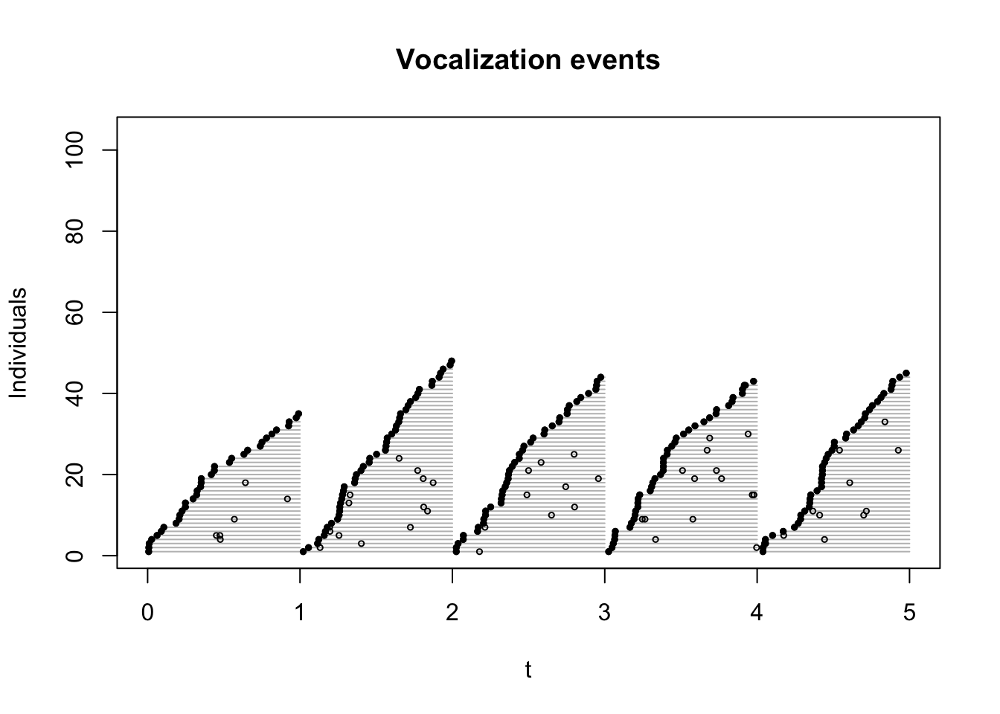
library(unmarked)
f <- function() {
a <- bsims_populate(l, density=Den)
b <- bsims_animate(a, vocal_rate=phi, move_rate=0)
tr <- bsims_transcribe(b, tint=tint)
drop(tr$visits)
}
Den <- 0.01
#ymx <- tr$visits
(ymx <- t(replicate(10, f())))## 0-1min 1-2min 2-3min 3-4min 4-5min
## [1,] 0 0 0 0 0
## [2,] 0 1 0 0 1
## [3,] 0 2 2 1 0
## [4,] 1 1 0 1 0
## [5,] 0 0 0 0 0
## [6,] 0 0 0 0 0
## [7,] 2 2 0 1 0
## [8,] 1 1 0 0 0
## [9,] 0 0 0 0 0
## [10,] 0 1 0 1 0## highly dependent on K when Den is higher
nmix <- pcount(~1 ~1, unmarkedFramePCount(y=ymx), K=1000)
coef(nmix)## lam(Int) p(Int)
## -0.02602 -0.44730plogis(coef(nmix)[2])## p(Int)
## 0.39exp(coef(nmix)[1])## lam(Int)
## 0.9743Den * 100## [1] 1Mixture with JOSM
spp <- "TEWA"
Y <- as.matrix(yall[[spp]])
D <- matrix(c(3, 5, 10), nrow(Y), 3, byrow=TRUE,
dimnames=dimnames(Y))
X <- josm$surveys[rownames(Y), c("DAY", "TSSR")]
ytot <- rowSums(Y)
Best <- get(rownames(M_AIC)[M_AIC$delta_AIC == 0])
summary(Best)##
## Call:
## cmulti(formula = Y | D ~ DAY, data = X, type = "mix")
##
## Removal Sampling (heterogeneous singing rate)
## Conditional Maximum Likelihood estimates
##
## Coefficients:
## Estimate Std. Error z value Pr(>|z|)
## log.phi -1.716 0.097 -17.69 <2e-16 ***
## logit.c_(Intercept) -2.070 0.692 -2.99 0.0028 **
## logit.c_DAY 4.804 1.558 3.08 0.0020 **
## ---
## Signif. codes: 0 '***' 0.001 '**' 0.01 '*' 0.05 '.' 0.1 ' ' 1
##
## Log-likelihood: -3.1e+03
## BIC = 6.22e+03p <- 1 - plogis(model.matrix(Best) %*% coef(Best)[-1]) *
exp(-10 * exp(coef(Best)[1]))
summary(p)## V1
## Min. :0.903
## 1st Qu.:0.909
## Median :0.913
## Mean :0.914
## 3rd Qu.:0.919
## Max. :0.925m <- glm(ytot ~ 1, family=poisson, offset=log(p))
mean(ytot)## [1] 1.222exp(coef(m))## (Intercept)
## 1.338mean(ytot / p)## [1] 1.337This result tells us mean abundance after correcting for availability bias, but we don’t know what area was effectively sampled, and detection of individuals given availability is probably less than 1. We shall address this problem in the next chapter.